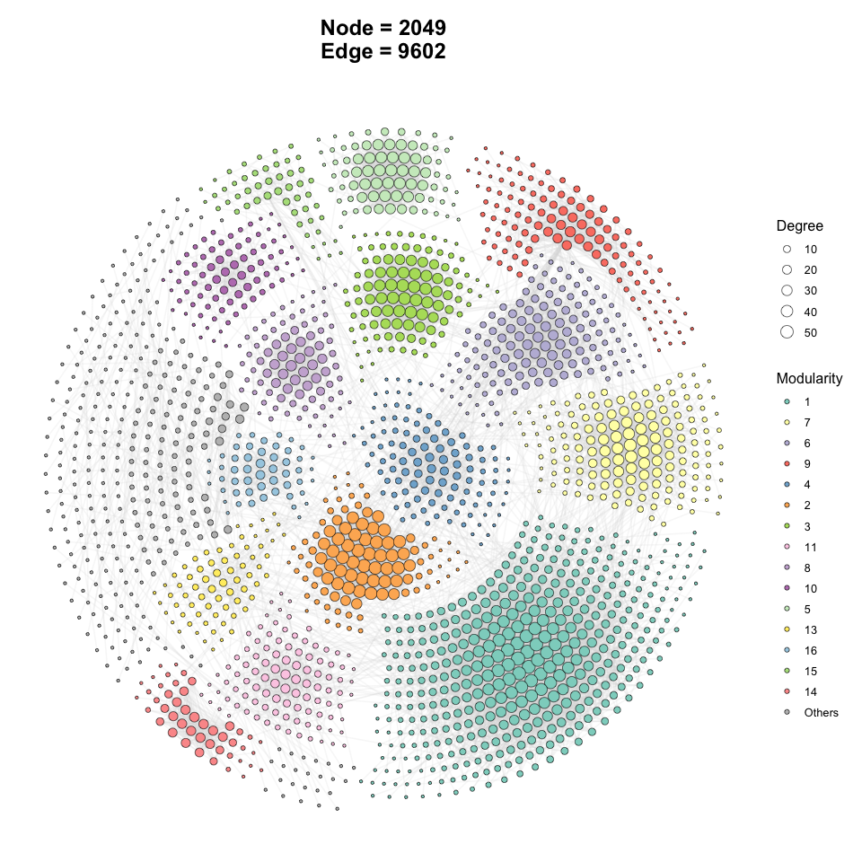
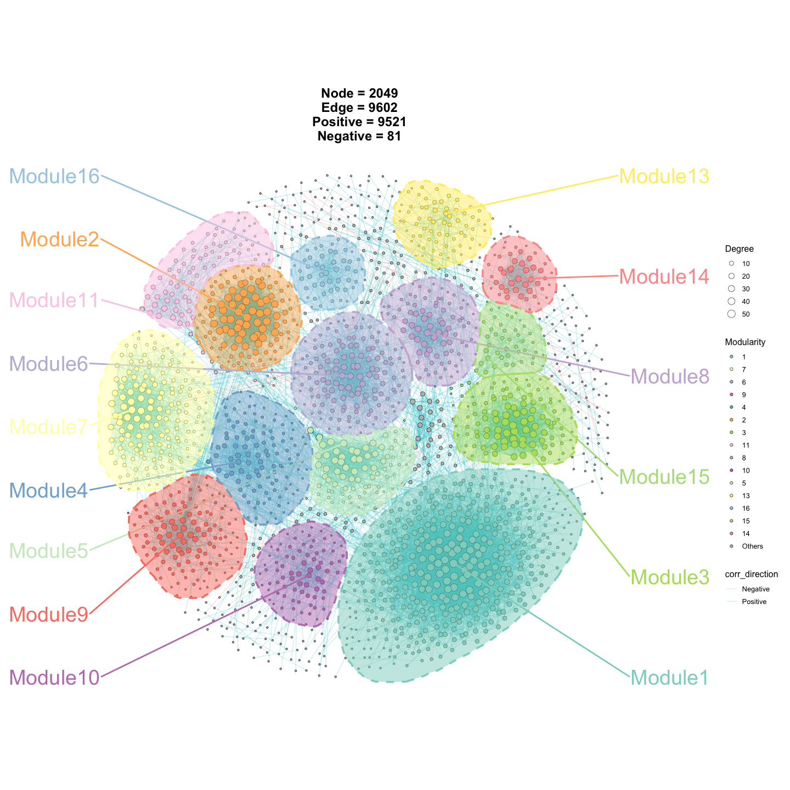
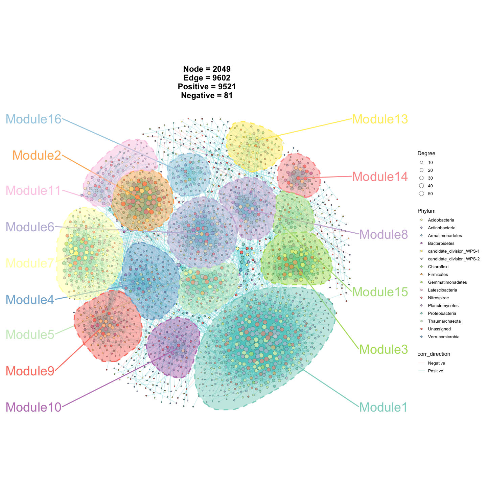
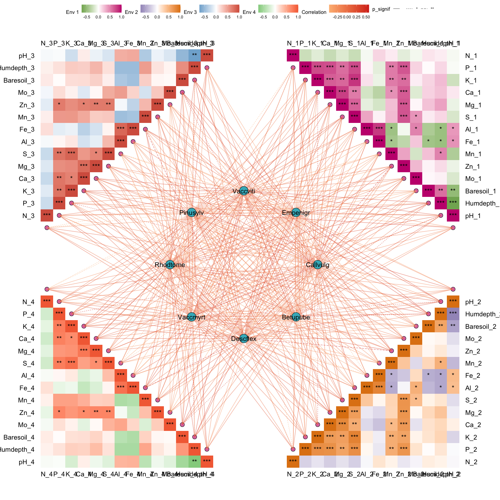
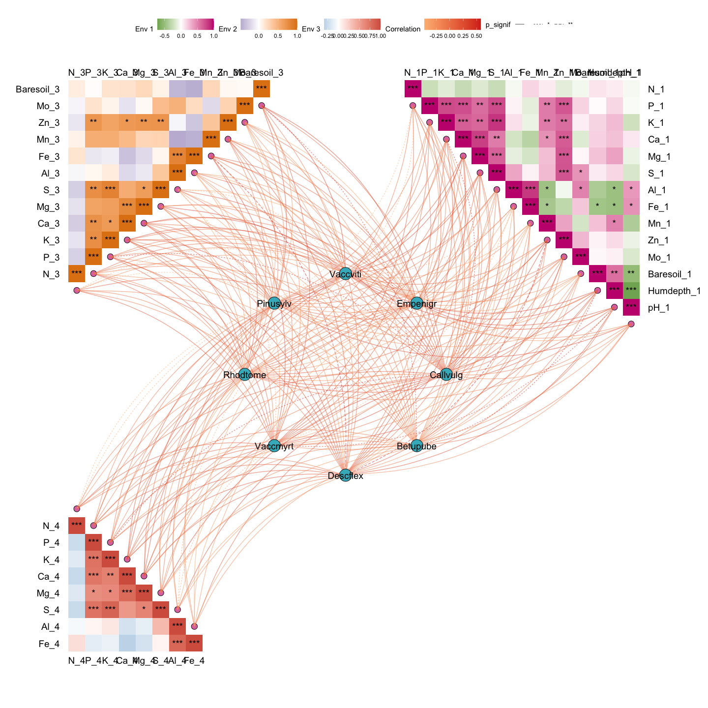

ggNetView is an R package for network analysis and visualization. It provides flexible and publication-ready tools for exploring complex biological and ecological networks.
Example1
Step1: load ggNetView
library(ggNetView)
#>
#> ░██ ░██
#> ░██
#> ░████████ ░████████ ░████████ ░███████ ░████████ ░██ ░██ ░██ ░███████ ░██ ░██ ░██
#> ░██ ░██ ░██ ░██ ░██ ░██ ░██ ░██ ░██ ░██ ░██ ░██░██ ░██ ░██ ░██ ░██
#> ░██ ░██ ░██ ░██ ░██ ░██ ░█████████ ░██ ░██ ░██ ░██░█████████ ░██ ░████ ░██
#> ░██ ░███ ░██ ░███ ░██ ░██ ░██ ░██ ░██░██ ░██░██ ░██░██ ░██░██
#> ░█████░██ ░█████░██ ░██ ░██ ░███████ ░████ ░███ ░██ ░███████ ░███ ░███
#> ░██ ░██
#> ░███████ ░███████
#>
#>
#> ggNetView v1.1.1 (2026)
#> Developed by Jiawang's Network Visualization Group
#>
#> Maintainers:
#> - Yue Liu <yueliu@iae.ac.cn>
#> - Chao Wang <cwang@iae.ac.cn>
#>
#> GitHub: https://github.com/Jiawang1209/ggNetView
#> Bug Reports: https://github.com/Jiawang1209/ggNetView/issues
#>
#> Type citation('ggNetView') for how to cite this package.
#> Run browseVignettes('ggNetView') for documentation.
#>
library(ggplot2)
#> Warning: package 'ggplot2' was built under R version 4.5.2
library(ggnewscale)Step2: load Data
You can load raw matrix
data("otu_tab")
otu_tab[1:5, 1:5]
#> KO1 KO2 KO3 KO4 KO5
#> ASV_1 1113 1968 816 1372 1062
#> ASV_2 1922 1227 2355 2218 2885
#> ASV_3 568 460 899 902 1226
#> ASV_4 1433 400 535 759 1287
#> ASV_6 882 673 819 888 1475You can load rarely matrix
data("otu_rare")
otu_tab[1:5, 1:5]
#> KO1 KO2 KO3 KO4 KO5
#> ASV_1 1113 1968 816 1372 1062
#> ASV_2 1922 1227 2355 2218 2885
#> ASV_3 568 460 899 902 1226
#> ASV_4 1433 400 535 759 1287
#> ASV_6 882 673 819 888 1475
data("otu_rare_relative")
otu_rare_relative[1:5, 1:5]
#> KO1 KO2 KO3 KO4 KO5
#> ASV_1 0.03306667 0.05453333 0.02013333 0.03613333 0.02686667
#> ASV_2 0.05750000 0.03393333 0.06046667 0.05810000 0.07320000
#> ASV_3 0.01733333 0.01296667 0.02290000 0.02336667 0.03106667
#> ASV_4 0.04266667 0.01093333 0.01416667 0.01933333 0.03346667
#> ASV_6 0.02646667 0.01856667 0.02110000 0.02353333 0.03806667You can load node annotation
data("tax_tab")
tax_tab[1:5, 1:5]
#> # A tibble: 5 × 5
#> OTUID Kingdom Phylum Class Order
#> <chr> <chr> <chr> <chr> <chr>
#> 1 ASV_2 Archaea Thaumarchaeota Unassigned Nitrososphaerales
#> 2 ASV_3 Bacteria Verrucomicrobia Spartobacteria Unassigned
#> 3 ASV_31 Bacteria Actinobacteria Actinobacteria Actinomycetales
#> 4 ASV_27 Archaea Thaumarchaeota Unassigned Nitrososphaerales
#> 5 ASV_9 Bacteria Unassigned Unassigned UnassignedStep3: create graph object
obj <- build_graph_from_mat(
mat = otu_rare_relative,
transfrom.method = "none",
method = "WGCNA",
cor.method = "pearson",
proc = "BH",
r.threshold = 0.7,
p.threshold = 0.05,
node_annotation = tax_tab
)
#> Step4: ggNetView to plot
p1 <- ggNetView(
graph_obj = obj,
layout = "gephi",
layout.module = "adjacent",
group.by = "Modularity",
fill.by = "Modularity",
pointsize = c(1, 5),
center = F,
jitter = F,
mapping_line = F,
shrink = 0.9,
linealpha = 0.2,
linecolor = "#d9d9d9"
)
p1
p2 <- ggNetView(
graph_obj = obj,
layout = "gephi",
layout.module = "random",
group.by = "Modularity",
fill.by = "Modularity",
pointsize = c(1, 5),
center = F,
jitter = TRUE,
jitter_sd = 0.15,
mapping_line = TRUE,
shrink = 0.9,
linealpha = 0.2,
linecolor = "#d9d9d9",
add_outer = T,
label = T
)
#> Large array (1004 rows x 997 columns x 17 images) broken into 4 pieces to avoid memory limits
#> Each piece of the raster consists of 710 rows and 705 columns
#> Coordinate system already present.
#> ℹ Adding new coordinate system, which will replace the existing one.
p2
#> Warning: No shared levels found between `names(values)` of the manual scale and the
#> data's fill values.
p3 <- ggNetView(
graph_obj = obj,
layout = "gephi",
layout.module = "random",
group.by = "Modularity",
fill.by = "Phylum",
pointsize = c(1, 5),
center = F,
jitter = TRUE,
jitter_sd = 0.15,
mapping_line = TRUE,
shrink = 0.9,
linealpha = 0.2,
linecolor = "#d9d9d9",
add_outer = T,
label = T
)
#> Large array (1004 rows x 997 columns x 17 images) broken into 4 pieces to avoid memory limits
#> Each piece of the raster consists of 710 rows and 705 columns
#> Coordinate system already present.
#> ℹ Adding new coordinate system, which will replace the existing one.
p3
#> Warning: No shared levels found between `names(values)` of the manual scale and the
#> data's fill values.
Example2
out1 <- gglink_heatmaps(
env = Envdf_4st,
spec = Spedf,
env_select = list(Env01 = 1:14,
Env02 = 15:28,
Env03 = 29:42,
Env04 = 43:56),
spec_select = list(Spec01 = 1:8),
relation_method = "correlation",
spec_layout = "circle_outline",
cor.method = "pearson",
cor.use = "pairwise",
r = 6,
orientation = c("top_right", "bottom_right", "top_left", "bottom_left")
)
#> The max module in network is 2 we use the 2 modules for next analysis
out1[[1]]
Example3
out2 <- gglink_heatmaps(
env = Envdf_4st,
spec = Spedf,
env_select = list(Env01 = 1:14,
Env03 = 29:40,
Env04 = 43:50),
spec_select = list(Spec01 = 1:8),
relation_method = "correlation",
spec_layout = "circle_outline",
cor.method = "pearson",
cor.use = "pairwise",
r = 6,
orientation = c("top_right", "top_left", "bottom_left")
)
#> The max module in network is 2 we use the 2 modules for next analysis
out2[[2]]
sessionInfo
sessionInfo()
#> R version 4.5.1 (2025-06-13)
#> Platform: aarch64-apple-darwin20
#> Running under: macOS Sequoia 15.6
#>
#> Matrix products: default
#> BLAS: /Library/Frameworks/R.framework/Versions/4.5-arm64/Resources/lib/libRblas.0.dylib
#> LAPACK: /Library/Frameworks/R.framework/Versions/4.5-arm64/Resources/lib/libRlapack.dylib; LAPACK version 3.12.1
#>
#> locale:
#> [1] en_US.UTF-8/en_US.UTF-8/en_US.UTF-8/C/en_US.UTF-8/en_US.UTF-8
#>
#> time zone: Asia/Shanghai
#> tzcode source: internal
#>
#> attached base packages:
#> [1] stats graphics grDevices utils datasets methods base
#>
#> other attached packages:
#> [1] ggnewscale_0.5.2 ggplot2_4.0.1 ggNetView_1.1.1
#>
#> loaded via a namespace (and not attached):
#> [1] mnormt_2.1.1 DBI_1.2.3 deldir_2.0-4
#> [4] gridExtra_2.3 rlang_1.1.6 magrittr_2.0.4
#> [7] otel_0.2.0 spatstat.geom_3.6-1 matrixStats_1.5.0
#> [10] compiler_4.5.1 RSQLite_2.4.5 png_0.1-8
#> [13] vctrs_0.6.5 stringr_1.6.0 pkgconfig_2.0.3
#> [16] crayon_1.5.3 fastmap_1.2.0 backports_1.5.0
#> [19] XVector_0.50.0 labeling_0.4.3 ggraph_2.2.2
#> [22] utf8_1.2.6 rmarkdown_2.30 preprocessCore_1.70.0
#> [25] purrr_1.2.0 bit_4.6.0 xfun_0.55
#> [28] cachem_1.1.0 goftest_1.2-3 blob_1.2.4
#> [31] spatstat.utils_3.2-0 tweenr_2.0.3 psych_2.5.6
#> [34] parallel_4.5.1 cluster_2.1.8.1 R6_2.6.1
#> [37] spatstat.data_3.1-9 stringi_1.8.7 RColorBrewer_1.1-3
#> [40] spatstat.univar_3.1-5 rpart_4.1.24 Rcpp_1.1.0
#> [43] Seqinfo_1.0.0 iterators_1.0.14 knitr_1.51
#> [46] tensor_1.5.1 WGCNA_1.73 base64enc_0.1-3
#> [49] IRanges_2.44.0 FNN_1.1.4.1 Matrix_1.7-4
#> [52] splines_4.5.1 nnet_7.3-20 igraph_2.2.1
#> [55] tidyselect_1.2.1 abind_1.4-8 rstudioapi_0.17.1
#> [58] dichromat_2.0-0.1 yaml_2.3.12 viridis_0.6.5
#> [61] spatstat.random_3.4-3 spatstat.explore_3.6-0 doParallel_1.0.17
#> [64] codetools_0.2-20 lattice_0.22-7 tibble_3.3.0
#> [67] Biobase_2.70.0 withr_3.0.2 KEGGREST_1.50.0
#> [70] S7_0.2.1 evaluate_1.0.5 foreign_0.8-90
#> [73] survival_3.8-3 polyclip_1.10-7 Biostrings_2.78.0
#> [76] pillar_1.11.1 checkmate_2.3.3 foreach_1.5.2
#> [79] stats4_4.5.1 generics_0.1.4 S4Vectors_0.48.0
#> [82] scales_1.4.0 glue_1.8.0 Hmisc_5.2-4
#> [85] tools_4.5.1 data.table_1.18.0 fastcluster_1.3.0
#> [88] graphlayouts_1.2.2 tidygraph_1.3.1 grid_4.5.1
#> [91] impute_1.82.0 tidyr_1.3.2 AnnotationDbi_1.72.0
#> [94] colorspace_2.1-2 nlme_3.1-168 ggforce_0.5.0
#> [97] htmlTable_2.4.3 Formula_1.2-5 cli_3.6.5
#> [100] spatstat.sparse_3.1-0 mascarade_0.2.999 viridisLite_0.4.2
#> [103] dplyr_1.1.4 gtable_0.3.6 dynamicTreeCut_1.63-1
#> [106] digest_0.6.39 BiocGenerics_0.56.0 ggrepel_0.9.6
#> [109] htmlwidgets_1.6.4 farver_2.1.2 memoise_2.0.1
#> [112] htmltools_0.5.9 multtest_2.64.0 lifecycle_1.0.4
#> [115] httr_1.4.7 GO.db_3.22.0 bit64_4.6.0-1
#> [118] MASS_7.3-65